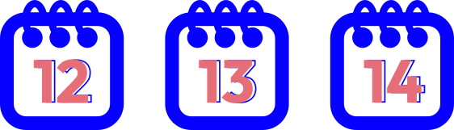
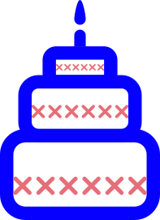

EXPOSÉ
SUJET
1) L'abstention dans la zone d'influence de Bordeaux, qui
sont-ils?


L'abstention
L’abstention c’est le fait de s’abstenir de voter lors d’une élection. Le vote n’étant pas un acte obligatoire en France, beaucoup de personnes décident de faire ce choix.
Pourquoi ces gens prennent-ils cette décision ? Qui sont-ils ?
Pars à leur rencontre avec notre jeune reporter Charlie dans la ville de Bordeaux pour mieux comprendre ce choix.

1


Ce que
j'ai retenu
- Parmi la population totale, 20.94% sont des personnes mineures ne pouvant pas voter.
- Parmi la population totale, 5.92% sont des personnes étrangères ne pouvant pas voter.
- Pas d’inscription aux listes électorales avant une date limite, pas de vote.
- L’âge et la situation matrimoniale influent sur l’abstention.
- L’abstention n’est pas quelque chose de définitif. Certaines personnes peuvent ainsi choisir de voter ou non en fonction des circonstances de l’élection.
- l’abstention est un moyen pour certaines personnes de ne pas suivre un candidat en particulier ou de montrer un désaccord vis-à-vis du système électoral actuel.
Conclusion
- Parmi la population totale, 20.94% sont des personnes mineures ne pouvant pas voter.
Parmi la population totale, 5.92% sont des personnes étrangères ne pouvant pas voter. - Pas d’inscription aux listes électorales avant une date limite, pas de vote. 
- L’âge et la situation matrimoniale influent sur l’abstention. 
- L’abstention n’est pas quelque chose de définitif. Certaines personnes peuvent ainsi choisir de voter ou non en fonction des circonstances de l’élection.
- L’abstention est un moyen pour certaines personnes de ne pas suivre un candidat en particulier ou de montrer un désaccord vis-à-vis du système électoral actuel.